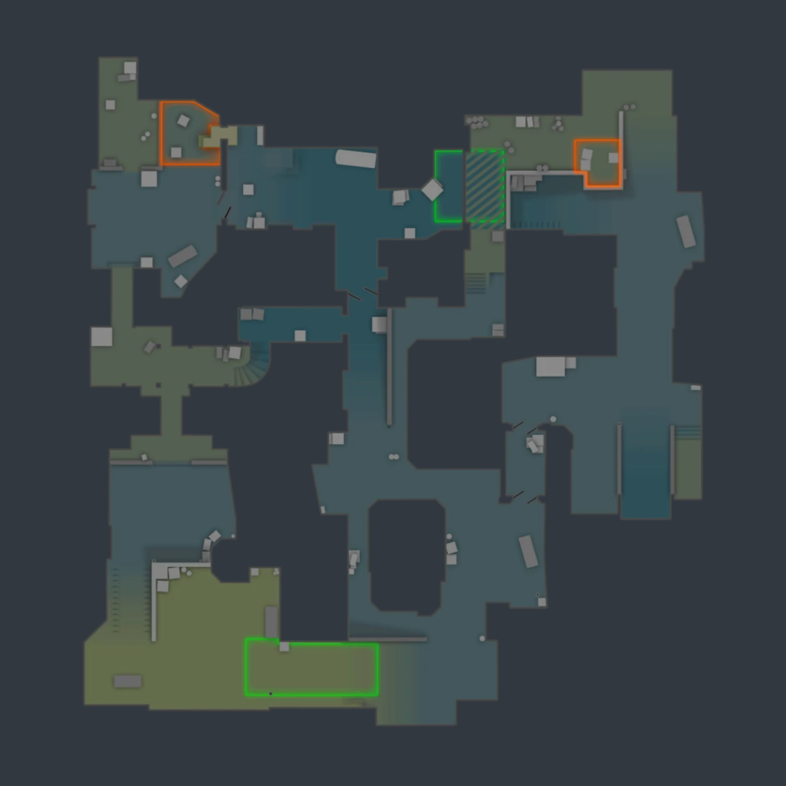
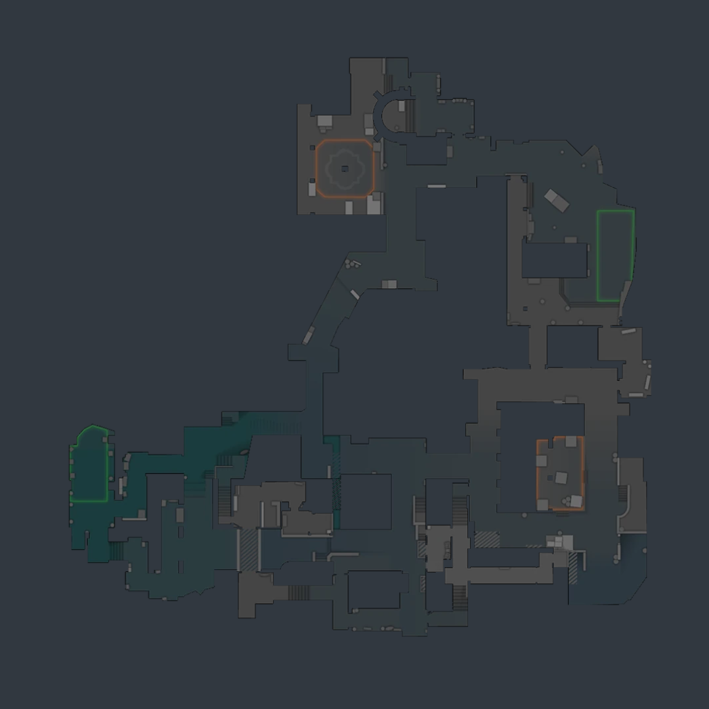
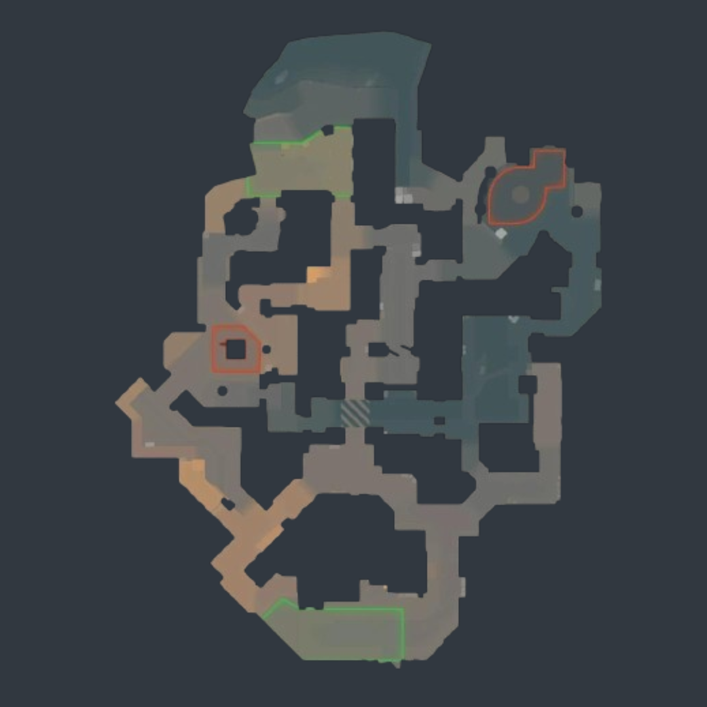
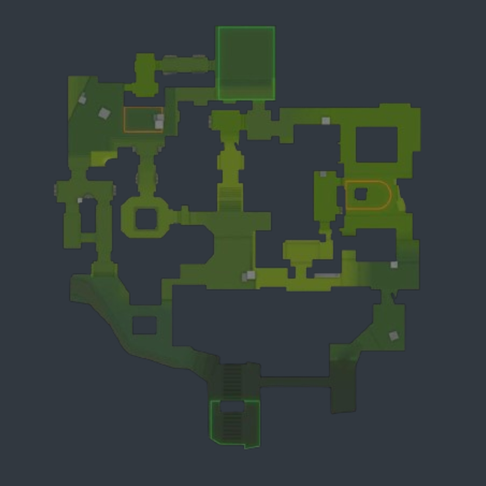
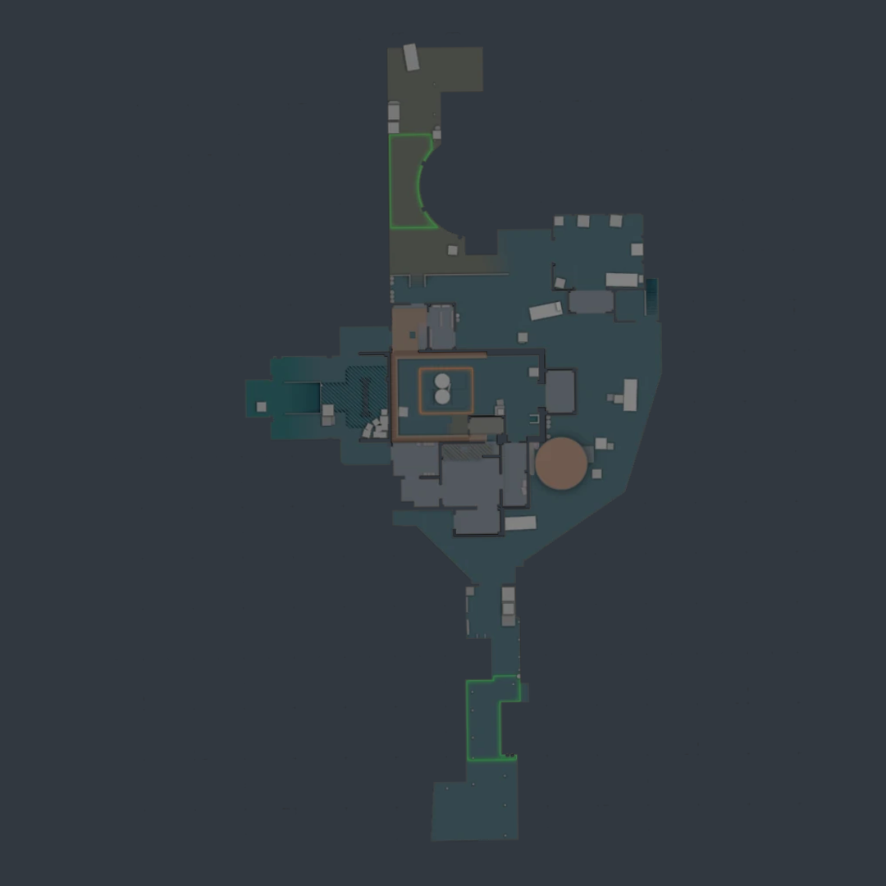
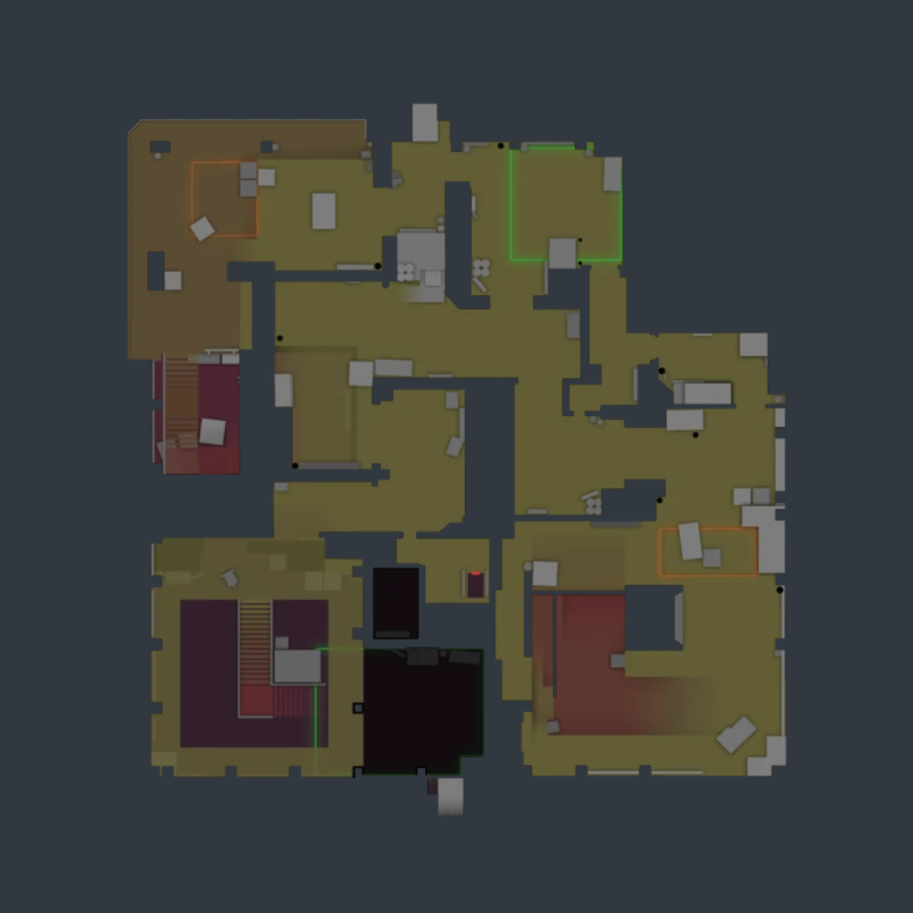

Mapas
O que é a Rotação de Mapas?
A rotação de mapas nos campeonatos de Counter-Strike 2 (CS2) refere-se ao conjunto de mapas que são oficialmente permitidos e utilizados durante as competições. Esta rotação é decidida pelos organizadores dos torneios e pode ser atualizada periodicamente para manter o jogo dinâmico e equilibrado, além de oferecer novos desafios aos jogadores e equipes. Os organizadores dos torneios, muitas vezes em colaboração com a desenvolvedora do jogo, revisam a lista de mapas disponíveis e escolhem aqueles que proporcionarão a melhor experiência competitiva.
Exemplos de Mapas na Rotação Atual dos Campeonatos
| Dust II | Inferno | Mirage | Anubis |
| Ancient | Nuke | Vertigo |
Importância da Rotação de Mapas
A rotação de mapas é crucial para manter o cenário competitivo de CS2 interessante e desafiador. Ela garante que os jogadores e equipes sejam proficientes em múltiplos mapas, evitando a monotonia e incentivando a versatilidade. A adição e remoção de mapas ajudam a manter o equilíbrio do jogo, evitando que um mapa favoreça excessivamente um lado (terroristas ou antiterroristas). Além disso, a introdução de novos mapas e a retirada dos mais antigos ou menos populares mantêm o jogo fresco e relevante, incentivando os jogadores a continuamente aprender e se adaptar. Para jogadores e equipes, dominar a rotação atual de mapas é essencial para o sucesso em campeonatos de CS2. Entender as nuances de cada mapa, adaptar estratégias e estar preparado para qualquer cenário são elementos-chave para vencer no cenário competitivo. A rotação de mapas não só desafia as habilidades individuais, mas também promove um jogo equilibrado e justo, onde o trabalho em equipe e a adaptação são recompensados.
Análise de Mapa: Dust II
Dust II é ambientado em uma região desértica do Oriente Médio, com uma estética simples e clara que facilita a navegação e o planejamento estratégico. O mapa é projetado para oferecer equilíbrio entre as equipes Terroristas e Contra-Terroristas, com dois bombsites distintos conectados por várias rotas que incentivam uma jogabilidade dinâmica e fluida. A simplicidade do design de Dust II é uma de suas maiores forças, tornando-o acessível e ao mesmo tempo desafiador.
Posições do mapa que são usadas:
Dust II é conhecido por suas posições estratégicas, como Long A, Short A (Catwalk), Túnel B, e Mid. Long A é um corredor aberto crucial para ataques ao Bombsite A, enquanto Short A oferece uma rota mais curta e elevada. O Túnel B é essencial para avançar ao Bombsite B, e Mid serve como um ponto de controle central, permitindo rotações rápidas entre os bombsites. Cada posição requer táticas específicas e coordenação para controlar e dominar.
Quando foi criado e introduzido no jogo:
Dust II foi criado originalmente para o Counter-Strike em 2001 e rapidamente se tornou um dos mapas mais icônicos do jogo. Sua introdução ao CS aconteceu em 2012, com uma versão retrabalhada lançada em 2017. A duradoura popularidade de Dust II é um testemunho de seu design equilibrado e gameplay envolvente, que resistiu ao teste do tempo.
Quantas partidas foram jogadas e quais são as mais emblemáticas:
Milhões de partidas foram disputadas em Dust II ao longo dos anos, tornando-o um dos mapas mais jogados na história do Counter-Strike. Partidas emblemáticas incluem clássicos em grandes torneios, como a final do ESL One Cologne 2014, onde Ninjas in Pyjamas enfrentou Fnatic em um confronto épico. Dust II é frequentemente palco de momentos memoráveis e clutches impressionantes que ficam na história do eSports.
Considerações Finais:
Considerando todas as nuances do mapa, Dust II oferece uma experiência de jogo envolvente e estratégica para os jogadores. A compreensão do layout, rotas e posicionamentos estratégicos é essencial para o sucesso de ambas as equipes. Além disso, a habilidade de utilizar granadas de forma eficaz e realizar emboscadas em pontos-chave pode ser a diferença entre a vitória e a derrota. Em última análise, Dust II permanece como um dos mapas mais amados e disputados no cenário competitivo do Counter-Strike, continuando a cativar jogadores com sua profundidade estratégica e jogabilidade emocionante.

Análise de Mapa: Inferno
Inferno é ambientado em uma vila italiana pitoresca, mas sua beleza esconde um campo de batalha intenso e estratégico. O mapa é conhecido por suas ruas estreitas, becos sinuosos e espaços confinados, que criam um ambiente desafiador e tático. A arquitetura do mapa promove combates próximos e favorece o uso estratégico de granadas para controlar as áreas e flanquear o inimigo.
Posições do mapa que são usadas:
Inferno é famoso por suas posições estratégicas, como Banana, que é a rota principal para o Bombsite B, Tapete e Meio, que oferecem acesso ao Bombsite A, e as áreas de defesa conhecidas como Cogu, Carro, e Bombsite B. Cada posição no mapa é crucial para a execução de táticas tanto ofensivas quanto defensivas, exigindo coordenação e precisão dos jogadores.
Quando foi criado e introduzido no jogo:
Inferno foi introduzido pela primeira vez em 1999 como parte do Counter-Strike original e, desde então, passou por várias atualizações e reiterações. No CS, Inferno foi lançado em 2012 e recebeu uma grande reformulação em 2016, que ajustou o design e melhorou a jogabilidade, mantendo-se como um dos mapas mais populares e jogados no cenário competitivo.
Quantas partidas foram jogadas e quais são as mais emblemáticas:
Inferno tem sido o palco de milhões de partidas ao longo dos anos, destacando-se como um dos mapas mais competitivos e intensamente disputados no CS. Entre as partidas mais emblemáticas estão a final do ELEAGUE Major 2017 entre Astralis e Virtus.pro, que foi amplamente considerada uma das finais mais emocionantes da história do CS. Inferno é frequentemente palco de momentos de alta tensão e jogadas memoráveis que ficam gravadas na memória dos fãs.
Considerações Finais:
Em última análise, Inferno continua a ser um dos mapas mais amados e respeitados no universo do Counter-Strike. Sua jogabilidade desafiadora e a variedade de estratégias possíveis garantem partidas emocionantes e competitivas, mantendo os jogadores voltando para mais desafios. Compreender o layout, as rotas e os posicionamentos estratégicos é essencial para alcançar o sucesso nesta arena clássica do FPS competitivo.

Análise de Mapa: Mirage
Mirage é ambientado em um ambiente desértico com uma arquitetura que lembra uma cidade do Oriente Médio ou Norte da África. O mapa é projetado para oferecer um equilíbrio perfeito entre áreas abertas e fechadas, permitindo uma variedade de estratégias e estilos de jogo. Com dois bombsites bem definidos e rotas de ataque claras, Mirage é um campo de batalha dinâmico onde a adaptabilidade e a comunicação são essenciais para o sucesso.
Posições do mapa que são usadas:
Mirage é conhecido por suas posições estratégicas, como o Bombsite A, acessado por meio da Caverna e do Palácio, e o Bombsite B, acessado pelo L e pelo Tapete. Outras áreas-chave incluem o Meio, que é crucial para controle do mapa, a Carroça, onde os Terroristas podem se posicionar para atacar B, e o Moscou, que conecta o Meio ao Bombsite B. Cada posição requer uma compreensão tática para dominar e controlar.
Quando foi criado e introduzido no jogo:
Mirage foi introduzido pela primeira vez em 2004 como um mapa customizado para Counter-Strike, criado por Michael "BubkeZ" Hull. Sua popularidade cresceu rapidamente e ele foi oficialmente integrado ao CS em 2013. Desde então, Mirage passou por várias atualizações para melhorar a jogabilidade e equilibrar as estratégias entre Terroristas e Contra-Terroristas, consolidando-se como um dos mapas mais amados do jogo.
Quantas partidas foram jogadas e quais são as mais emblemáticas:
Milhões de partidas foram jogadas em Mirage, tornando-o um dos mapas mais disputados no cenário competitivo do CS. Partidas memoráveis incluem a final do MLG Major Championship: Columbus 2016, onde Luminosity Gaming venceu Natus Vincere em uma série épica. Mirage é frequentemente escolhido em torneios devido à sua popularidade e equilíbrio, proporcionando jogos emocionantes e cheios de ação.
Considerações Finais:
Mirage mantém sua posição como um dos mapas mais queridos e disputados no Counter-Strike, graças à sua jogabilidade envolvente e à diversidade de estratégias possíveis. Compreender o layout, as rotas e os posicionamentos estratégicos é crucial para alcançar o sucesso neste mapa icônico do FPS competitivo.

Análise de Mapa: Anubis
Anubis se passa em um cenário egípcio antigo, imerso em uma atmosfera de mistério e antiguidade. O mapa é desenhado com uma arquitetura rica e detalhada, refletindo templos, ruínas e estátuas monumentais. Anubis proporciona um ambiente de batalha variado, com áreas abertas que incentivam confrontos diretos e passagens estreitas que favorecem emboscadas e jogadas táticas. A combinação de estética histórica e jogabilidade complexa torna Anubis um mapa único e envolvente.
Posições do mapa que são usadas:
Anubis é caracterizado por suas posições estratégicas únicas. O Bombsite A pode ser acessado pelos Terroristas através do Meio e da Água, enquanto os Contra-Terroristas defendem de áreas como Templo, Ravina. O Bombsite B é acessado via DD (Double Dors) e Água, com os CTs defendendo de posições como Escuro e Ruina. O controle de Meio é crucial para dominar o mapa, permitindo rotações rápidas entre os bombsites e oferecendo linhas de visão estratégicas.
Quando foi criado e introduzido no jogo:
Anubis foi introduzido pela primeira vez em 2020 como um mapa customizado para o Counter-Strike: Global Offensive, antes de ser oficialmente integrado ao jogo em novembro de 2022. O mapa foi criado pelos designers Roald, jd40 e Marduk, oferecendo uma nova experiência de jogo ambientada em um cenário egípcio antigo, repleto de detalhes históricos e arquitetônicos únicos.
Quantas partidas foram jogadas e quais são as mais emblemáticas:
Desde sua introdução oficial, Anubis rapidamente se tornou popular entre a comunidade de CS, com milhares de partidas sendo jogadas diariamente. Embora seja relativamente novo no cenário competitivo, já teve seu destaque em vários torneios, incluindo o ESL Pro League Season 17, onde equipes de alto nível como NAVI e FaZe Clan demonstraram suas habilidades táticas e estratégias inovadoras no mapa.
Considerações Finais:
Anubis representa uma adição emocionante ao mapa pool do CS, oferecendo uma experiência de jogo única e desafiadora para os jogadores. Seus diferenciais nas rotas e layout proporcionam um ambiente de jogo mais variado e estratégico, onde a comunicação e o trabalho em equipe são ainda mais essenciais para o sucesso. Compreender as nuances específicas de Anubis é crucial para dominar este mapa e alcançar a vitória.

Análise de Mapa: Ancient
Ancient se passa em um cenário de ruínas antigas, possivelmente em uma selva mesoamericana, com uma estética que lembra templos e construções pré-colombianas. O mapa é projetado com uma combinação de áreas abertas e espaços confinados, promovendo uma jogabilidade variada e tática. A ambientação rica e detalhada contribui para uma experiência de jogo imersiva, onde o conhecimento do terreno e a coordenação são essenciais para o sucesso.
Posições do mapa que são usadas:
Ancient é conhecido por suas posições estratégicas e complexas. O Bombsite A é acessível através de áreas como Fundo e Rosquinha, com pontos de defesa críticos em Templo, Yurih e Caixa de Fogo. O Bombsite B pode ser atacado através da Rampa e do Escuro, com posições defensivas importantes como Pilar e Sombra. O controle de Meio é vital para rotações rápidas e controle do mapa, enquanto locais como Peru e Sol oferecem posições de emboscada.
Quando foi criado e introduzido no jogo:
Ancient foi introduzido em dezembro de 2020 como parte da atualização de operação Broken Fang no Counter-Strike: Global Offensive. Desenvolvido para trazer uma nova dimensão ao jogo, Ancient rapidamente atraiu a atenção dos jogadores com seu design único e desafios táticos. A inclusão de Ancient no pool competitivo trouxe frescor ao CS, exigindo novas estratégias e táticas dos jogadores.
Quantas partidas foram jogadas e quais são as mais emblemáticas:
Desde sua introdução, Ancient se tornou um dos mapas mais jogados, especialmente em partidas competitivas de alto nível. Partidas memoráveis incluem confrontos no PGL Major Stockholm 2021, onde equipes como NAVI e G2 Esports disputaram intensamente no mapa. Esses jogos destacaram a complexidade tática de Ancient e mostraram como equipes de elite adaptam suas estratégias para dominar o campo de batalha.
Considerações Finais:
Ancient representa uma adição emocionante ao mapa pool do CS, trazendo consigo uma atmosfera de mistério e antiguidade. Com seu layout intricado e diferenciais nas rotas, o mapa oferece uma experiência de jogo envolvente e desafiadora, onde a comunicação e a coordenação entre os membros da equipe são essenciais para alcançar a vitória. Compreender as nuances específicas de Ancient é fundamental para dominar este mapa e emergir vitorioso nas batalhas.

Análise de Mapa: Nuke
Nuke se passa em uma atmosfera sombria e opressiva de uma usina nuclear abandonada, oferecendo aos jogadores um ambiente desafiador e único. Seu layout vertical, com múltiplos níveis e corredores estreitos, cria uma dinâmica de jogo única que demanda habilidade e estratégia para dominar. O mapa é conhecido por sua complexidade e exige uma compreensão profunda das nuances táticas para alcançar o sucesso.
Posições do mapa que são usadas:
As posições estratégicas em Nuke são amplamente exploradas pelos jogadores para garantir vantagem tática. O silo externo, os corredores que levam aos bombsites A e B, além de áreas-chave como o telhado e o saguão da usina, são frequentemente palco de intensos confrontos e estratégias elaboradas que exigem coordenação e precisão dos jogadores.
Quando foi criado e introduzido no jogo:
Nuke teve sua origem em 1999, no Counter-Strike original. Sua reintrodução no CS ocorreu em 2012, através da atualização Operation Payback, trazendo a essência do clássico para uma nova geração de jogadores e mantendo viva a tradição do mapa.
Quantas partidas foram jogadas e quais são as mais emblemáticas:
Ao longo dos anos, Nuke testemunhou inúmeras partidas, tornando-se um dos mapas mais jogados e estudados no CS. Entre as partidas mais memoráveis estão confrontos épicos entre equipes profissionais em grandes torneios, como a final do ESL One Cologne 2019, que foi marcada por momentos de alta tensão e reviravoltas emocionantes.
Considerações Finais:
Nuke é um mapa que continua a desafiar e intrigar os jogadores de CS, proporcionando uma experiência de jogo intensa e repleta de adrenalina. Sua reintrodução no CS trouxe uma nova vida a um clássico atemporal, mantendo sua posição como um dos mapas mais icônicos e emocionantes do jogo. Dominar Nuke requer não apenas habilidade individual, mas também comunicação eficaz e trabalho em equipe, tornando cada partida uma experiência emocionante e gratificante.

Análise de Mapa: Vertigo
Vertigo se passa no topo de um arranha-céu em construção, oferecendo uma atmosfera única de altura vertiginosa e perigo constante. O mapa é caracterizado por seu design vertical, com muitas rampas, escadas e plataformas elevadas que proporcionam combate a várias altitudes. A ambientação urbana e industrial do mapa exige dos jogadores um bom domínio de movimentação e posicionamento, além de estratégias que aproveitem os diferentes níveis de elevação.
Posições do mapa que são usadas:
Vertigo é conhecido por suas posições estratégicas como Rampa, que é uma rota crucial para o Bombsite A, e Meio, que fornece acesso e controle central do mapa. Outras áreas importantes incluem o Bombsite B, acessado através de Escada e Favela, e as posições defensivas como Escanteio e Gerador, que permitem aos Contra-Terroristas monitorar e responder rapidamente às movimentações dos Terroristas. O uso de áreas elevadas e plataformas adiciona uma camada de verticalidade à jogabilidade, diferenciando Vertigo de outros mapas.
Quando foi criado e introduzido no jogo:
Vertigo foi introduzido pela primeira vez no Counter-Strike 1.1 em 2001, mas era menos popular em comparação com outros mapas clássicos. Ele foi reimaginado e reintroduzido no CS em março de 2019, após uma série de reformulações e ajustes feitos pela Valve para equilibrar o mapa e torná-lo competitivo. Essas mudanças incluíram alterações significativas no layout e na jogabilidade, trazendo uma nova dinâmica ao jogo.
Quantas partidas foram jogadas e quais são as mais emblemáticas:
Desde sua reintrodução, Vertigo se tornou um mapa comum em partidas competitivas, com milhares de jogos disputados em plataformas como FACEIT e ESEA. Um dos confrontos mais emblemáticos em Vertigo ocorreu no ESL One Cologne 2020, onde Team Liquid enfrentou Vitality em uma série intensa que destacou as complexidades e desafios do mapa. Partidas em Vertigo são frequentemente cheias de ação e estratégias inovadoras, tornando-o um favorito em torneios.
Considerações Finais:
Vertigo representa uma adição refrescante e desafiadora ao pool de mapas do CS , destacando-se por seu design vertical e ambiente de construção inacabada. O mapa exige uma forte coordenação de equipe e estratégias adaptáveis devido às suas múltiplas rotas e posições elevadas. A complexidade de Vertigo oferece um campo de batalha dinâmico e envolvente, onde a comunicação e a tática são cruciais para o sucesso. À medida que os jogadores continuam a explorar e dominar Vertigo, ele se consolida como um mapa fundamental no cenário competitivo do CS.
